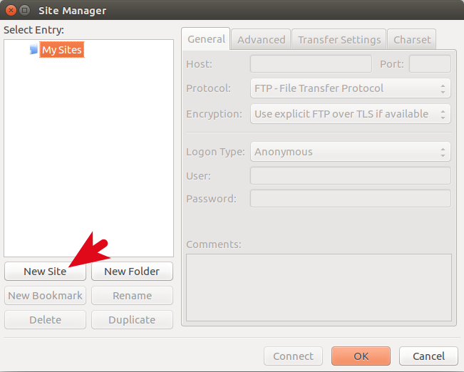

Как работает SAMBA? часть 2
Июнь 15th, 2011 Рубрики: Linux, SAMBA, Windows, Настройка сервера Linux, основы Linux, Принтер
 Доброго времени, гости и читатели блога! Сегодня продолжу рассматривать возможности пакета SAMBA. Перед прочтением данного материала я бы посоветовал ознакомиться со статьями основы SAMBA и CUPS. Итак, из прошлых статей мы знаем как установить пакет samba. После установки, файлы пакета могут располагаться в следующих каталогах:
Доброго времени, гости и читатели блога! Сегодня продолжу рассматривать возможности пакета SAMBA. Перед прочтением данного материала я бы посоветовал ознакомиться со статьями основы SAMBA и CUPS. Итак, из прошлых статей мы знаем как установить пакет samba. После установки, файлы пакета могут располагаться в следующих каталогах:
- Демоны и утилиты помещаются в каталог: /usr/sbin
- Файлы настройки в: /etc/samba/
- Файлы журналов в: /var/log/samba/
- Некоторые управляющие файлы помещаются в: /var/lib/samba
конечно, возможны некоторые отклонения, например в старых версиях SAMBA настройки хранятся в /etc, а логи в /var/log, при сборке из исходников, samba устанавливается в /usr/local/samba. Т.о. можно убедиться, что SAMBA у нас установлена.
Настройка SAMBA
Настройка SAMBA заключается в редактировании конфигурационного файла /etc/samba/smb.conf. Структура конфига самба схожа с форматом файлов .ini в Windows и представляет собой записи вида:
[stanza0]
key0=value0
key1=value1
[stanza1]
key0=value0
key1=value1
То есть параметры, они же ключи (key0, key1 и т.д.) собраны в группы, которые называют стансами или строфами (stanza0, stanza1 и т.д.), название которых заключены в фигурные скобки. Каждый каталог или принтер, предоставляемый в общий доступ в Windows называется разделяемым ресурсом (share) или сервисом (service), или в простой терминологии - шАра  Каждый ресурс можно представить в Linux отдельным разделом строфой с особым именем и набором параметров. SAMBA понимает громадное количество параметров, с которыми можно ознакомиться тут man smb.conf. Я опишу основные. Существует так же специальный раздел [global], хранящий параметры по умолчанию ко всем сервисам и к серверу в целом. Для начала, я бы посоветовал скопировать оригинальный файл (т.к. в нем большое количество комментариев, с которыми на досуге можно ознакомиться) и создать (например, с помощью редактора vi) на его месте новый, со следующими параметрами:
Каждый ресурс можно представить в Linux отдельным разделом строфой с особым именем и набором параметров. SAMBA понимает громадное количество параметров, с которыми можно ознакомиться тут man smb.conf. Я опишу основные. Существует так же специальный раздел [global], хранящий параметры по умолчанию ко всем сервисам и к серверу в целом. Для начала, я бы посоветовал скопировать оригинальный файл (т.к. в нем большое количество комментариев, с которыми на досуге можно ознакомиться) и создать (например, с помощью редактора vi) на его месте новый, со следующими параметрами:
samba-server:~# cp /etc/samba/smb.conf /etc/samba/smb.conf.orig
samba-server:~# cat /etc/samba/smb.conf
[global]
workgroup = WORKGROUP
netbios name = SAMBA
printing = CUPS
wins support = yes
[homes]
browsable = no
read only = no
[printers]
printable = yes
printing = CUPS
path = /var/spool/samba
[data]
path = /export/data
read only = no
map archive = no
Давайте разберем параметры и разделы по порядку:
[global]
Как уже говорилось - содержит параметры, настраивающие пакет SAMBA в целом. Параметр workgroup определяет имя рабочей группы, к которой принадлежит сервер samba. Соответственно, если есть необходимость - нужно переименовать группу на подходящую Вам. Данный параметр необязательный, если его не указывать, то сервер будет принадлежать группе WORKGROUP. Далее, параметр netbios name, который указывает на имя сервера, которое будет отображаться в сетевом окружении Windows. Данный параметр так же необязательный, если его не указывать, то сервер будет отображаться под именем локального хоста (которое можно узнать командой echo $HOSTNAME). Тут необходимо сделать акцент на том, что указывать значение localhost в данном параметре неприемлемо, т.к. данное имя на машинах Wondows всегда будет разрешаться в адрес 127.0.0.1. Так же, в данном станзе можно указать параметр encrypt passwords, который указывает SAMBA шифровать пароли. Это необходимо для клиентов с ОС версией выше windows 98. Если используется версия SAMBA выше 3.0, то данный параметр указывать не обязательно, т.к. он используется по умолчанию. Параметр wins support требует от samba работать в качестве WINS сервера, это не обязательно, но способствует более эффективной работе, о чем я говорил в прошлой статье о SAMBA. Если Ваш Samba сервер использует несколько сетевых интерфейсов, то можно явно указать, на каком из интерфейсов слушать подключения с помощью параметра: interfaces = 192.168.1.1/24.
[homes]
Раздел [homes] определяет виртуальный сервис, указывая SAMBA автоматически расшаривать домашний каталог пользователя. То есть, при подключении к серверу SAMBA производится поиск имени пользователя в файле /etc/passwd и если в локальной системе есть учетная запись пользователя и она имеет домашний каталог, то данный каталог раcшаривается для подключенного пользователя. Параметр read only = no указывает предоставлять домашние каталоги в режиме чтения-записи. Параметр browsable=no указывает не отображать каталог homes в списке расшаренных ресурсов (но домашний каталог подключенного пользователя будет виден пользователю). Данное разрешение учитывает права доступа в Linux, то есть если файл в расшаренной папке с правами только на чтение, то он не станет доступным на запись. Иначе сказав: сервер не предоставит доступа больше чем UNIX система. В данной директории так же полезно указать параметр path = /path/to/homedir/%S, если вы хотите разделить системные домашние папки от расшариваемых.
[printers]
Раздел [printers], в SAMBA, хранит настройки печати, то есть SAMBA получает указание сделать принтеры, подключенные к системе Linux, доступными клиентам сети. Точнее будет сказать, что данный раздел определяет доступ ко всем принтерам, указанным в файле /etc/printcap. Разделы, они же строфы, которые определяют совместно используемый принтер, включая раздел [printers] должен содержать строку printable = yes. Для доступа к принтерам, необходимо прописать в файле /etc/printcap настройки доступа к принтеру. Параметр printing = CUPS указывает использовать систему печати CUPS (возможно так же указать более старые системы печати, такие как BSD и LPRNG). Для того чтобы использовать свой файл printcap, необходимо его создать и указать в виде параметра printcap = /path/to/printcap. Параметр path = /var/spool/samba указывает, где будет размещен спулер (каталог временного хранилища очереди печати). Для данного каталога необходим установленный StickyBit.
[data]
Данный раздел приведен в качестве примера, как открыть совместный доступ к каталогу. Следуя данному примеру можно расшарить сколько угодно каталогов, указав для каждого свое имя раздела и значение path. Название раздела используется в качестве имени разделяемого ресурса и отображается клиентам Windows, как папка с таким именем. Параметр, отвечающий за функциональность, описанную ниже - map archive - установлен в no.
SAMBA не всегда выполняет задачу - заставить файловую систему UNIX выглядеть как файловая система Windows для клиентов Windows. Одно из различий между файловыми системами Windows и UNIX в том, что в Windows существует атрибут archive, с помощью которого программы резервного копирования определяют, был ли файл модифицирован с момента последнего копирования. В UNIX прямого аналога данного атрибута нет. SAMBA моделирует данный атрибут архивации с помощью бита исполнения для владельца файла UNIX. Данный костыль позволяет программам резервного копирования Windows корректно производить инкрементальное резервное копирование с ресурсов SAMBA. Но есть побочный эффект - файлы с данным атрибутом выглядят в Linux как исполняемые. В конфиге SAMBA в странсе [data] параметр, отвечающий за данную функцию называется map archive.
Хочу отметить кое-какие характеристики при разборе файла smb.conf:
- Имена разделов и параметров не чувствительны к регистру.
- Только первый символ равенства значимый.
- Пробелы до и после первого символа равенства игнорируются.
- Начальные, концевые и внутренние пробелы некорректны в названиях секций и именах параметров.
- Начальные и концевые пробелы в значении параметров игнорируются.
- Внутренний пробел в значении параметра сохраняется дословно.
- Все строки начинающиеся с символа ";" с запятой или "#" игнорируются как строки содержащие только пробел (комментируются).
- Все строки оканчивающиеся символом «\» продолжаются на следующей строке в стиле UNIX.
- Значения после символа равенства в параметрах содержат строку (без кавычек) или логическое значение, как то да/нет, 0/1 или истина/ложь.
- Регистр не имеет значения в логических значениях, но сохраняется в строковых значениях.
После внесения изменений в конфигурационный файл, необходимо проверить его на корректность. Для этого есть команда testparm. Данная программа проверяет наличие ошибок и несовместимостей в конфигурационном файле SAMBA. Очень хорошая практика - документировать конфигурационные файлы. Но данная практика вступает в противоречие со способом, которым работает самба. Конфигурационный файл очень часто перечитывается демоном smbd, т.о. чем больше строк в файле и чем больше его объем, тем больше это сказывается на производительности системы. Для решения данной проблемы необходимо создать "редактируемый" конфиг, в котором все описано как нужно и из редактируемого файла создать рабочий с помощью команды:
samba-server: ~# testparam -s /etc/samba/smb.conf.edit > /etc/samba/smb.conf
Из редактируемого файла будут удалены все комментарии и будут находится только те параметры, которые отличаются от значения по умолчанию. Так же, стоит отметить, что из файла будут удалены все макросы, которые необходимо будет восстановить вручную. Например, строка include=/etc/samba/%m.conf превратиться в строку include=/etc/samba/.conf.
После запуска проверки параметров командой testparm возможно вы увидите дамп конфига, в котором отсутствуют некоторые наши параметры. Это говорит о том, что данные параметры совпадают с параметрами Samba по-умолчанию.
Запуск сервера SAMBA
Основу Samba составляют три демона, два из которых необходимы всегда:
nmbd
Демон nmbd отвечает за регистрацию всех имен и обслуживание запросов их разрешения. Обеспечивает основной механизм, обеспечивающий возможность обзора сети. Обрабатывает все протоколы на базе UDP. Демон nmbd должен запускаться первым.
smbd
Демон smbd обслуживает все соединения на базе протоколов TCP/IP к сервисам доступа к файлам и к принтерам. Кроме этого, демон заведует процессом локальной аутентификации. Должен запускаться сразу после nmbd.
winbindd
Демон winbindd должен запускаться, когда сервер Samba выступает в роли члена домена Win NT4 или Active Directory. Запуск так же необходим, когда Samba вступает в доверительные отношения с другим доменом. Демон winbindd проверяет файл smb.conf на наличие параметров idmap id и idmap gid, которые затем будут использоваться для отображения идентификаторов системы безопасности Windows (SID). Указываемый в этих параметрах диапазон не должен находится в противоречии с уже используемыми в системе идентификаторами (начало значений пользовательских ID указывается в файле /etc/login.defs). Если указанные параметры не заданы, то демон winbindd не будет выполнять отображение Windows SID, а аутентификация будет выполняться только на уровне аутентификации пользователей.
Запуск данных демонов возможен как в standealone режиме, так и с помощью супердемона xinetd. В первом случае службы запущены постоянно и прослушивают сетевой интерфейс, во втором, службы запускаются с помощью демона inetd/xinetd и отвечают на запросы только при поступлении запроса от клиента. Для запуска Samba с помощью супердемона необходимо добавить описание запуска в конфигурационный файл /etc/inetd.conf для inetd или /etc/xinetd.conf для xinetd. Супердемону xinetd обязательно посвящу отдельную тему и на сегодня с xinetd остановим обсуждение.
Запуск демонов Samba
Об уровнях выполнения, можно почитать тут. Данный демон должен быть разрешен для запуска на необходимых уровнях выполнения ОС (команда в RedHat-подобных дистрибутивах - /sbin/chkconfig samba on, в Debian - /usr/sbin/update-rc.d samba defaults). Хотя я и не делал акцент на сборку Samba из исходников, но описание запуска все же затрону для общего понимания. Итак, после сборки Samba, в двоичном пакете необходимо отыскать сценарий, который будет запускать и останавливать демоны в необходимом порядке. При этом необходимо проверить сценарий на корректность имен каталогов, где лежит исполняемый файл демона. Сценарий необходимо сделать исполняемым с помощью команды chmod +x, положить в каталог /etc/init.d/ и создать соответствующие ссылки на скрипт в каталогах уровней запуска Linux (/etc/rc*.d), в которых необходим запуск демона и соответственно - остановка.
Запуск демона из bash вручную производится командой:
samba-server: ~# /etc/init.d/samba start
соответственно, для остановки заменить start на stop, для перезапуска - restart.
Проверка Samba
После установки и настройки сервера, естественно, необходимо проверить работоспособность сервера. Для этого необходимо воспользоваться утилитой smbclient, чтобы получить список разделяемых ресурсов:
samba-server:~# smbclient -L localhost -U%
Domain=[WORKGROUP] OS=[Unix] Server=[Samba 3.5.6]
Sharename Type Comment
--------- ---- -------
data Disk
IPC$ IPC IPC Service (Samba 3.5.6)
it_216 Printer Printer
Domain=[WORKGROUP] OS=[Unix] Server=[Samba 3.5.6]
Server Comment
--------- -------
HOST
SAMBA Samba 3.5.6
Workgroup Master
--------- -------
WORKGROUP SAMBA
Полученные результаты показывают, что сервер SAMBA допускает возможность анонимного подключения. В данном случае подключившийся пользователь получает права доступа гостевой учетной записи, которая обычно соответствует учетной записи пользователя nobody в файле /etc/passwd. Если на данном шаге получить информацию не удалось, то это означает, что трафик Samba блокируется фаерволом, либо гостевая учетка не была найдена в файле /etc/passwd.
Так же, в диагностике отлично помогает утилита smbstatus, которая отображает текущих подключенных клиентов.
Добавление пользователей
В нашей конфигурации клиенты должны быть аутентифицированы Samba, чтобы получить доступ к разделяемым ресурсам. От клиента требуется указать имя и пароль, которые имеются на хосте Linux, а так же, если в smb.conf есть раздел [homes], то у пользователя должен быть домашний каталог. Об управлении пользователями в Linux можно почитать тут. Обычно, добавление пользователей в Linux производится командой:
samba-server: ~# useradd -m username
Кроме того, у Samba есть свой файл паролей /etc/samba/smbpasswd, хранящий Microsoft Windows-совместимые зашифрованные пароли. Для каждого пользователя необходимо выполнить команду smbpasswd, чтобы добавить учетную запись Samba для этого пользователя. При этом, имя и пароль должны соответствовать тем, которые имеются у учетных записей Linux:
samba-server:~# smbpasswd -a username
New SMB password:
Retype new SMB password:
Создание простейшего файлового сервера и сервера печати с полным доступом всем без авторизации (абсолютная файлопомойка)
Итак, давайте рассмотрим простейший пример организации файловой помойки, когда нет необходимости запрашивать имя пользователя и пароль для доступа к серверу. Давайте предположим, что есть какой-то каталог, например /tmp/obmen, а так же принтеры, подключенные к локальной системе, к которым необходим общий доступ, при этом используется система печати CUPS.
Для начала, необходимо понимание, как организовать гостевой доступ к серверу samba. В разделе глобальных параметров [global] есть такой параметр как security, который отвечает за порядок доступа к расшаренным ресурсам. Данный параметр определяет режим безопасности для доступа к серверу и может принимать следующие значения:
USER
Значение USER используется по-умолчанию (в версиях Samba от 3.0 и выше), даже если параметр не задан в smb.conf. При этом параметре, клиент должен сначала произвести вход, с существующим именем пользователя и паролем Linux.
SHARE
Значение SHARE в старых версиях Samba использовалось по-умолчанию. При подключении к ресурсу с параметром security = SHARE клиентам не нужно регистрироваться с использованием действительного имени пользователя и пароля. Вместо этого, клиенты посылают информацию аутентификации (пароли) на конкретный ресурс, в тот момент, когда хотят получить доступ к этому ресурсу. Заметьте, что демон smbd ВСЕГДА использует реального пользователя UNIX, когда обслуживает клиента, даже если установлено security = SHARE. Т.к. в режиме SHARE от пользователя не требуется посыла его имени, smbd использует несколько приемов для определения пользователя UNIX.
Список предполагаемых имен пользователей UNIX и соответствующих им паролей определяется следующим образом:
- Если установлен параметр guest only, тогда все остальные сценарии пропускаются и используется только имя гостевой учетки (guest account).
- Если имя пользователя послано вместе с запросом на установление соединения после сопоставления (см. параметр username map), добавляется в список.
- Если клиент выполнял запрос logon (вызов SessionSetup SMB), тогда имя пользователя, использовавшееся в этом вызове будет добавлено в список.
- Если параметр guest only не установлен, тогда этот список пользователей обрабатывается с соответствующими паролями. Первый пользователь, пароль которого совпадет с реальным будет использован в качестве действующего пользователя UNIX.
- Если параметр guest only установлен или не найдено подходящего имени пользователя, тогда, если Samba разрешено "принимать гостей" (usershare allow guests), будет использоваться гостевая учетка, в противном случае доступ будет запрещен.
Существуют так же такие значения параметра security, как SERVER, ADS и DOMAIN, которые используют удаленную аутентификацию. Но в данной статье я не буду затрагивать данные параметры.
Итак, из изложенного становиться понятно, что для гостевого доступа к серверу необходимо использовать параметр security = SHARE. Чтобы не вникать в схему работы сопоставления пользователей запрашивающих доступ к ресурсам samba и локальных системных пользователей linux, предлагаю пойти по пути первого шага и задать параметр guest only.
При этом, чтобы система знала, с кем ассоциировать гостевую учетную запись, то есть с какой учетной записью UNIX ассоциировать неизвестного подключенного клиента, необходимо указать параметр guest account, равный одной из системной учетной записи Linux. Естественно, данная учетная запись Linux должна иметь необходимый доступ к разделяемым ресурсам, чтобы не возникло вопросов с удалением/добавлением/изменением файлов. Давайте взглянем на рабочий файл файлопомойки:
samba-server:~# cat /etc/samba/smb.conf
[global]
netbios name = SAMBA
security = SHARE
guest account = dostup
wins support = Yes
[printers]
path = /var/spool/samba
guest only = Yes
read only = No
printable = Yes
browseable = No
[obmennik]
path = /tmp/obmen
guest only = Yes
force user = dostup
force group = dostup
read only = No
create mask = 0777
directory mask = 0777
guest only = Yes
Как видно, в нашем конфиге появилось несколько уже известных нам параметров и параметров, о которых мы не говорили... Итак по порядку: параметр guest account задает имя учетной записи Linux, с помощью которой анонимные пользователи будут получать доступ к разделяемым ресурсам. Данный пользователь (в нашем случае - dostup) должен иметь права на чтение и запись в каталог, который будет указан в разделяемом ресурсе (в нашем примере - раздел [obmennik] и каталог /tmp/obmen). Следующий параметр guest only - разрешает только гостевые соединения к общему ресурсу, то есть для сетевого ресурса нет необходимости указывать пароль. Далее появились 2 параметра - force user и force group, которые определяют владельца и группу Linux, с правами которых в разделяемом ресурсе будут создаваться файлы и каталоги при гостевом доступе. Параметры create mask и directory mask, не трудно догадаться, что это маски прав доступа для создания файлов. (Без данных параметров у меня на Debian 6 и samba присваивались права rwxr--r-- на файлы в подкаталогах расшаренного ресурса, в результате чего было невозможно удалить созданные файлы.) Вот собственно и весь конфиг.
Примечание: указывать параметр guest account нет особой необходимости. При установке samba через пакетный менеджер, по умолчанию уже будет задан некий пользователь (скорей всего nobody). Узнать, какой пользователь задан по умолчанию можно командой /usr/bin/testparm -sv /etc/samba/smb.conf | grep acco. При этом, необходимо учитывать права доступа заданного пользователя на файловую систему.
Автоматическая загрузка драйвера принтера
Давайте рассмотрим возможность упрощения своей работы за счет хранения драйверов принтера на сервере и возможность автоматической установки драйвера при подключении принтера. Но давайте сначала немного теории.
Итак, в Linux есть два способа сделать системный принтер доступным для совместного использования клиентами Windows. Первый - в режиме неформатированных данных (raw mode), второй - интеллектуальный режим (smart mode). Давайте рассмотрим оба способа.
режим неформатированных данных (raw mode)
В raw mode система печати просто передает на принтер полученное задание для печати без какой-либо обработки. Для работы CUPS в режиме неформатированных данных, необходимо указать в конфиге параметр cups option - raw. Если данный параметр отсутствует и CUPS получит задание для печати, которое содержит последовательность фильтров не известное системе печати, то задание может быть удалено так и не увидев бумагу. Чтобы исправить данную ситуацию, необходимо отредактировать файлы /etc/cups/mime.types и /etc/cups/mime.convs и раскомментировать строку application/octet-stream. Данное действие позволит CUPS отправлять на принтер задания с неизвестными последовательностями символов.
Данный режим требует установки корректного драйвера на все клиенты Windows. То есть клиент Windows должен сам выполнить обработку задания печати и подготовить к непосредственной передаче на принтер.
интеллектуальный режим (smart mode)
Для режима smart mode необходимо установить на сервере CUPS локальную систему фильтрации. В данном режиме, сервер будет пытаться интерпретировать тип файла, отправленный на принтер, и затем фильтровать данные, автоматически выбирая преобразование соответствующие принтеру. При работе CUPS в интеллектуальном режиме, на клиенты Windows допускается использовать драйвер CUPS Post Script. Данный режим мы рассматривать не будем.
Итак, режим RAW. Давайте подредактируем конфигурационный файл /etc/samba/smb.conf до следующего вида и рассмотрим его параметры:
samba-server:# cat /etc/samba/smb.conf
[global]
workgroup = WORKGROUP
printing = CUPS
wins support = yes
netbios name = SAMBA
security = SHARE
guest account = dostup
cups options = raw
show add printer wizard = yes
printer admin = root, dostup
[printers]
comment = Очередь печати SMB
printable = yes
path = /var/spool/samba
guest only = Yes
guest ok = yes
read only = No
[print$]
comment = Драйверы принтера
path = /var/lib/samba/drivers
guest only = Yes
guest ok = yes
read only = No
create mask = 0777
directory mask = 0777
force user = dostup
force group = dostup
write list = root, dostup
[obmennik]
path = /share/obmen
guest only = Yes
guest ok = yes
read only = No
create mask = 0777
directory mask = 0777
force user = dostup
force group = dostup
 У нас добавились следующие пункты: параметр cups options, который определяет режим raw и раздел [print$], аналогичный общему ресурсу Windows (\\host\print$), в котором хранятся файлы драйверов, параметр printer admin задает пользователей Linux, которым разрешено иметь полный доступ для управления свойствами расшаренных принтеров, а так же параметр write list, задающий список пользователей Linux, имеющих право добавлять драйвер в ресурс [print$]. Для корректной работы ресурса [print$], нам необходимо создать указанный в параметре path каталог со структурой аналогичной Windows, для этого необходимо выполнить следующее:
У нас добавились следующие пункты: параметр cups options, который определяет режим raw и раздел [print$], аналогичный общему ресурсу Windows (\\host\print$), в котором хранятся файлы драйверов, параметр printer admin задает пользователей Linux, которым разрешено иметь полный доступ для управления свойствами расшаренных принтеров, а так же параметр write list, задающий список пользователей Linux, имеющих право добавлять драйвер в ресурс [print$]. Для корректной работы ресурса [print$], нам необходимо создать указанный в параметре path каталог со структурой аналогичной Windows, для этого необходимо выполнить следующее:
samba-server:~# mkdir /var/lib/samba/drivers
samba-server:~# cd /var/lib/samba/
samba-server:/var/lib/samba# mkdir -p drivers/{W32ALPHA,W32MIPS,W32PPC}
samba-server:/var/lib/samba# mkdir -p drivers/{W32X86/{2,3},WIN40,COLOR,IA64,x64}
samba-server:/var/lib/samba# chown -R dostup:root drivers
samba-server:/var/lib/samba# chmod -R u+rwx,g+rwx,o+rx-w drivers
Далее, необходимо установить и настроить локальные принтеры в систему печати. Для загрузки драйверов в SAMBA, после установки принтеров, необходимо выполнить следующие шаги (шаги рассматриваются на ОС Windows XP):
- Загрузить Windows и залогинется.
 В сетевом окружении найти машину, которую мы планируем использовать для общего доступа и как сервер печати. (в нашем случае - samba). При этом, должен отобразиться список общих ресурсов и расшаренных принтеров, а так же специальная папка "Принтеры и факсы". Если данного каталога нет, то скорее всего удален куст реестра, отвечающий за его отображение. Для восстановления, необходимо скачать файл и из архива импортировать в реестр его параметры.
В сетевом окружении найти машину, которую мы планируем использовать для общего доступа и как сервер печати. (в нашем случае - samba). При этом, должен отобразиться список общих ресурсов и расшаренных принтеров, а так же специальная папка "Принтеры и факсы". Если данного каталога нет, то скорее всего удален куст реестра, отвечающий за его отображение. Для восстановления, необходимо скачать файл и из архива импортировать в реестр его параметры.- В данном каталоге будет список принтеров Samba. Из списка выбираем правой кнопкой необходимый нам принтер (тот, для которого хотим организовать загрузку драйверов), нажимаем "Свойства". При этом появиться предложение на установку драйверов данного принтера - НЕ соглашаемся. Далее появиться сообщение "Сервер для данного принтера не имеет требуемого установленного драйвера принтера сервер печати...." - нажимаем Отмена.
 Переходим на вкладку "Дополнительно" и напротив поля "Драйвер" нажимаем "Сменить...". При этом запуститься "Мастер установки драйверов принтера на "имя_сервера_печати"", нажимаем Далее и отвечаем на вопросы местера. На втором шаге, драйвер желательно устанавливать свежий, скачанный с сайта производителя принтера. После выбора драйвера и нажатия кнопки "Готово" начнется копирование драйвера на сервер-samba!!!
Переходим на вкладку "Дополнительно" и напротив поля "Драйвер" нажимаем "Сменить...". При этом запуститься "Мастер установки драйверов принтера на "имя_сервера_печати"", нажимаем Далее и отвечаем на вопросы местера. На втором шаге, драйвер желательно устанавливать свежий, скачанный с сайта производителя принтера. После выбора драйвера и нажатия кнопки "Готово" начнется копирование драйвера на сервер-samba!!!- После данной процедуры при установке принтера на клиента Windows, драйвер должен устанавливаться автоматически.
Фух, тяжелая получилась статься и немного размытая. Надеюсь, что будет понятно.
Резюме.
В сегодняшней статье я продолжил первую часть изучения пакета SAMBA. Были рассмотрены примеры работы абсолютной файлопомойки и сервера печати на Linux. А так же, описан процесс настройки сервера печати на SAMBA и CUPS с автоматической загрузкой драйверов. Про самба можно писать тома книг, всех моментов не затронешь, но надеюсь, что полученных знаний будет вполне достаточно для быстрого старта и дальнейшего развития. С радостью отвечу на Ваши комментарии.
Upd 2012.05.08: дополнил раздел с файлопомойкой
Другие материалы в категории SAMBA
В этом руководстве расскажем, как установить FTP сервер на VPS с ОС Ubuntu. Будем использовать сервер vsftpd, который считается самым быстрым и безопасным FTP сервером для UNIX-систем.
FTP или File Transfer Protocol – протокол приема и передачи файлов в сети. Используя модель клиент/сервер и безопасность SSL/TLS, FTP позволяет пользователям обмениваться файлами с удаленными компьютерами безопасно, эффективно и надежно, передавая данных по протоколу TCP/IP.
FTP работает подобно HTTP или SMTP, с единственным отличием, что он ответственен за безопасную передачу данных от отправителя к получателю, а не веб-страницы с сервера к пользователю или электронного письма через интернет. В этом руководстве рассмотрено создание FTP сервера на ОС Ubuntu версии 16.04.
Примечание: Текущее руководство основывается на версии ОС Ubuntu 16.04. Но вы можете применить те же шаги по созданию FTP сервера на Ubuntu 14.04.
Содержание
Шаг 1 – Установка Vsftpd
Прежде всего, давайте сделаем обновление всех пакетов перед началом установки демона vsftpd. Для этого выполним команду:
sudo apt-get update
Дождитесь завершения всех процессов и вы увидите подтверждающее сообщение:
Затем установим демон vsftpd следующей командой:
sudo apt-get install vsftpd
Вы получите уведомление требующее подтверждения, нажмите Y и Enter для продолжения установки.
По завершению установки, сделаем бэкап оригинального файла конфигурации, чтобы начать с чистого файла настроек:
sudo cp /etc/vsftpd.conf /etc/vsftpd.conf.original
Теперь мы можем переходить к следующему шагу и настраивать фаервол.
Шаг 2 – Разрешение FTP трафика на фаерволе
Чтобы позволить серверу FTP, развёрнутому на ОС Ubuntu взаимодействовать с внешним миром, нужно настроить путь через фаервол. Для начала посмотрим включён ли фаервол. Запустите следующую команду для определения статуса:
sudo ufw status
Если вы увидите такое сообщение:
ufw: command not found
Это значит, что фаервол не установлен и можно перходить к следующему шагу.
Если же на выходе будут показаны правила или сообщение о том, что фаервол активен, нужно определить, как он будет обрабатывать FTP-трафик. Давайте сделаем следующее, откроем порты 20 и 21 для трафика FTP; порты 40000-50000 будут зарезервированы, как диапазон пассивных портов, который в конечном итоге будет установлен в файле конфигурации; порт 990 будет использоваться, когда TLS будет включен. Выполним следующие команды:
sudo ufw allow 20/tcp
sudo ufw allow 21/tcp
sudo ufw allow 990/tcp
sudo ufw allow 40000:50000/tcp
Теперь посмотрим на статус:
sudo ufw status
Результат будет выглядеть где-то так:
Output
Status: active
To Action From
-- ------ ----
990/tcp ALLOW Anywhere
20/tcp ALLOW Anywhere
21/tcp ALLOW Anywhere
40000:50000/tcp ALLOW Anywhere
20/tcp (v6) ALLOW Anywhere (v6)
21/tcp (v6) ALLOW Anywhere (v6)
990/tcp (v6) ALLOW Anywhere (v6)
40000:50000/tcp (v6) ALLOW Anywhere (v6)
Теперь, все необходимые порты открыты и доступны для нас и мы можем переходит к следующему шагу.
Шаг 3 – Создание каталога пользователя
На третьем шаге создания Ubuntu FTP сервера, нужно выбрать пользователя, который будет подключатся по FTP. Для этого создадим нового пользователя, выполнив такую команду:
sudo adduser alex
Заполните пароль и другие детали, когда запросит. В идеале, с точки зрения безопасности, FTP должен быть ограничен одним специальным каталогом. Vsftpd использует chroot для создания этой защиты. Со включённым chroot, локальный пользователь ограничивается его домашним каталогом (по умолчанию). Однако, может оказаться, что из-за защиты vsftpd, пользователь не сможет ничего создавать в каталоге. Мы не убираем права на запись в домашнем каталоге, вместо этого мы сделаем каталог ftp, который будет вести себя как chroot вместе с сохранением способности к записи, что будет позволять хранить файлы. Используйте такую команду для создания каталога FTP:
sudo mkdir /home/alex/ftp
Установите права владения:
sudo chown nobody:nogroup /home/alex/ftp
Наконец, удалите права на запись:
sudo chmod a-w /home/alex/ftp
Теперь, используя следующую команду проверьте права доступа:
sudo ls -la /home/alex/ftp
На выходе мы увидим приблизительно это:
total 8
dr-xr-xr-x 2 nobody nogroup 4096 Jun 29 11:32 .
drwxr-xr-x 3 alex alex 4096 Jun 29 11:32 ..
На следующем этапе мы создадим файл, содержащий каталоги и права доступа к ним:
sudo mkdir /home/alex/ftp/files
sudo chown alex:alex /home/alex/ftp/files
И наконец, добавим в каталог тестовый файл, который мы будет использовать во время тестирования чего-либо:
echo "vsftpd sample file" | sudo tee /home/alex/ftp/files/sample.txt
Шаг 4 – Настройка vsftpd
Чтобы продолжить устанавливать FTP сервер на Ubuntu VPS, нам нужно настроить vsftpd и наш FTP-доступ. В этом руководстве мы разрешим одному пользователю подключаться по FTP, используя локальную консоль. Необходимая для этого двух этапная настройка уже установлена в конфигурационном файле (vsftpd.conf). Вначале проверьте, чтобы настройки в файле совпадали с указанными ниже, используя команду nano:
sudo nano /etc/vsftpd.conf
. . .
# Allow anonymous FTP? (Disabled by default).
anonymous_enable=NO
#
# Uncomment this to allow local users to log in.
local_enable=YES
. . .
В этом же файле, продолжим удаляя # включаем write_enable:
. . .
write_enable=YES
. . .
Chroot также раскоментируем, чтобы убедиться, что пользователь, подключившийся по FTP имеет доступ к файлам внутри разрешённой директории:
. . .
chroot_local_user=YES
. . .
Несколько новых значений будут также нужны для добавления вручную. Вы можете просто вставить их в конец файла. Вначале, user_sub_token добавим к пути каталога local_root. Это позволит конфигурации работать с текущим пользователем и любым другим пользователем, который будет добавлен позже:
user_sub_token=$USER
local_root=/home/$USER/ftp
Чтобы быть уверенным, что доступно достаточное количество соединений, мы ограничим количество портов, используемое в конфигурационном файле:
pasv_min_port=40000
pasv_max_port=50000
В этом руководстве мы планируем дать доступ индивидуальной основе, поэтому давайте установим настройки так, чтобы дать доступ только тем пользователям, которые непосредственно добавлены в список:
userlist_enable=YES
userlist_file=/etc/vsftpd.userlist
userlist_deny=NO
Флаг userlist_deny отвечает за переключение логики, когда он установлен в “NO”, только те пользователи, которые есть в списке имеет доступ. По завершению нажмите CTRL+X и подтвердите сохранения изменений в файле.
В завершение, продолжим создание и добавление нашего пользователя в файл:
echo "alex" | sudo tee -a /etc/vsftpd.userlist
Проверим, что пользователь действительно активен запуском команды:
cat /etc/vsftpd.userlist
Вывод должен быть “alex”, как показано на скриншоте:
Перезапустите демона, используя следующую команду, чтобы запустить изменения настроек:
sudo systemctl restart vsftpd
Шаг 5 – Делаем защищенный FTP
По умолчанию, FTP не делает никакого шифрование данных, поэтому мы будем использовать TLS/SSL, чтобы позаботиться о безопасности. В качестве первого шага нам нужно создать SSL сертификат и использовать его для защиты Ubuntu FTP сервера. Для начала выполним следующую команду:
sudo openssl req -x509 -nodes -days 365 -newkey rsa:2048 -keyout /etc/ssl/private/vsftpd.pem -out /etc/ssl/private/vsftpd.pem
Флаг –days делает сертификат действующим в течение года и мы включаем 2048-битный приватный ключ RSA в этой же команде. Когда запросит нужные данные введите их в предоставленном поле.
После создания сертификата ещё раз откройте конфигурационный файл:
sudo nano /etc/vsftpd.conf
В конце файла есть строка с “_rsa”. Закомментируйте эти две строки:
# rsa_cert_file=/etc/ssl/certs/ssl-cert-snakeoil.pem
# rsa_private_key_file=/etc/ssl/private/ssl-cert-snakeoil.key
Вместо этого мы направим конфиг файл на сертификат, который мы создали. Добавьте такие строки:
rsa_cert_file=/etc/ssl/private/vsftpd.pem
rsa_private_key_file=/etc/ssl/private/vsftpd.pem
Теперь мы включим SSL и убедимся, что только пользователи со включённым SSL могут с нами связываться. Измените значение ssl_enable на YES:
ssl_enable=YES
Теперь добавьте следующие строки для продолжения создания защиты (это запретить какие-либо анонимные соединения с использованием SSL):
allow_anon_ssl=NO
force_local_data_ssl=YES
force_local_logins_ssl=YES
Настройте TLS используя:
ssl_tlsv1=YES
ssl_sslv2=NO
ssl_sslv3=NO
Здесь мы добавим ещё 2 опции. Во-первых, повторное использование SSL не будет необходимым, потому что это может привести к разрывам у большого количества клиентов. Во-вторых, мы будем использовать высокозащищенный код шифрования, что будет означать, что длина ключа соответствует (или больше, чем) 128 бит.
require_ssl_reuse=NO
ssl_ciphers=HIGH
Сделаем ещё раз перезапуск, для вступления изменений в силу:
sudo systemctl restart vsftpd
Прекрасно! Вот вы и настроили FTP сервер на вашем Ubuntu VPS для работы с протоколом SSL/TLS.
Шаг 6 – Проверка подключения, используя FileZilla
Сегодня FTP клиенты поддерживают настройку шифрования TLS, поэтому это прекрасная возможность проверить, работает ли наш Ubuntu FTP сервер как следует. Чтобы проверить соединение, будем использовать FileZilla FTP клиент. Для начала запустите FileZilla, нажатием на иконку Site Manager.
Нажмите на кнопку New Site в появившемся окне начните заполнять данные о Ubuntu FTP сервере.

Заполните необходимые поля информацией о недавно созданном Ubuntu FTP сервере. Так как мы настроили его с использованием TLS, мы может отметить настройку шифрования в “explicit FTP over TLS” положение. Окончательное окно настроек выглядит так:
Как только настроите, нажимайте Connect и появится окошко с запросом для введения пароля пользователя FTP.

В заключение вам нужно будет подтвердить SSL сертификат на вашем FTP сервере на Ubuntu VPS.
После подтверждения, корневой root-каталог с тестовым файлом появятся на вашем экране.

Это всё! Теперь вы можете производить любую передачу файлов с вашего компьютера на Ubuntu FTP сервер и обратно.
Заключение
В этом руководстве мы прошли шаг за шагом путь создания для локального пользователя безопасного способа передачи файлов через FTP с SSL/TLS на Ubuntu FTP сервере. Также мы протестировали соединения, используя FileZilla, чтобы убедиться, что всё работает.